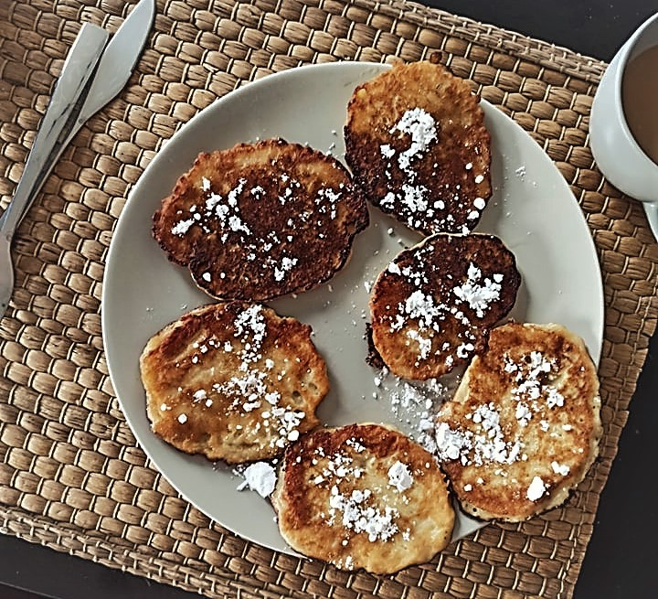

Racuchy

Opis
Przepis na pyszne chrupiące racuchy. Idealne na śniadanie!
Składniki:
- 3/4 szklanki mleka owsianego
- 3/4 szklanki mąki pszennej
- 1 jajko
- łyżka oleju
- 2 pokrojone jabłka
- szczypta soli
- szczypta cynamonu
- cukier puder
Sposób przygotowania:
- Zmieszaj ze sobą wszystkie składniki (poza cukrem pudrem).
- Smaż niewielkie placuszki na rozgrzanej patelni z odrobiną oleju.
- Przed podaniem oprósz cukrem pudrem.